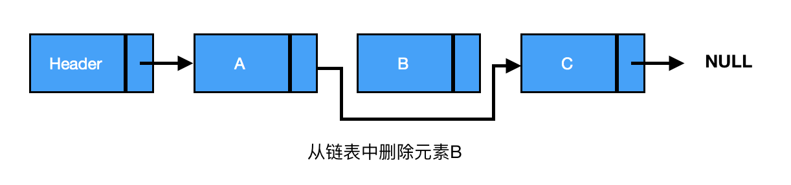

什么是 socket？
socket 的原意是“插座”，在计算机通信领域，socket 被翻译为“套接字”，它是计算机之间进行通信的一种约定或一种方式。通过 socket 这种约定，一台计算机可以接收其他计算机的数据，也可以向其他计算机发送数据。
socket 的典型应用就是 Web 服务器和浏览器：浏览器获取用户输入的 URL，向服务器发起请求，服务器分析接收到的 URL，将对应的网页内容返回给浏览器，浏览器再经过解析和渲染，就将文字、图片、视频等元素呈现给用户。
UNIX/Linux 中的 socket 是什么？
在 UNIX/Linux 系统中，为了统一对各种硬件的操作，简化接口，不同的硬件设备也都被看成一个文件。对这些文件的操作，等同于对磁盘上普通文件的操作。
你也许听很多高手说过，UNIX/Linux 中的一切都是文件！那个家伙说的没错。
为了表示和区分已经打开的文件，UNIX/Linux 会给每个文件分配一个 ID，这个 ID 就是一个整数，被称为文件描述符（File Descriptor）。例如：
通常用 0 来表示标准输入文件（stdin），它对应的硬件设备就是键盘；
通常用 1 来表示标准输出文件（stdout），它对应的硬件设备就是显示器。
UNIX/Linux 程序在执行任何形式的 I/O 操作时，都是在读取或者写入一个文件描述符。一个文件描述符只是一个和打开的文件相关联的整数，它的背后可能是一个硬盘上的普通文件、FIFO、管道、终端、键盘、显示器，甚至是一个网络连接。
请注意，网络连接也是一个文件，它也有文件描述符！你必须理解这句话。
我们可以通过 socket() 函数来创建一个网络连接，或者说打开一个网络文件，socket() 的返回值就是文件描述符。有了文件描述符，我们就可以使用普通的文件操作函数来传输数据了，例如：
用 read() 读取从远程计算机传来的数据；
用 write() 向远程计算机写入数据。
你看，只要用 socket() 创建了连接，剩下的就是文件操作了，网络编程原来就是如此简单！
WIndow 系统中的 socket 是什么？
Windows 也有类似“文件描述符”的概念，但通常被称为“文件句柄”。因此，本教程如果涉及 Windows 平台将使用“句柄”，如果涉及 Linux 平台则使用“描述符”。
与 UNIX/Linux 不同的是，Windows 会区分 socket 和文件，Windows 就把 socket 当做一个网络连接来对待，因此需要调用专门针对 socket而设计的数据传输函数，针对普通文件的输入输出函数就无效了。
这个世界上有很多种套接字（socket），比如 DARPA Internet 地址（Internet 套接字）、本地节点的路径名（Unix套接字）、CCITT X.25地址（X.25 套接字）等。但本教程只讲第一种套接字——Internet 套接字，它是最具代表性的，也是最经典最常用的。以后我们提及套接字，指的都是 Internet 套接字。
流格式套接字（SOCK_STREAM）
- SOCK_STREAM 有以下几个特征：
- 数据在传输过程中不会消失；
- 数据是按照顺序传输的；
- 数据的发送和接收不是同步的（有的教程也称“不存在数据边界”）。
数据报格式套接字（SOCK_DGRAM）
- 可以将 SOCK_DGRAM 比喻成高速移动的摩托车快递，它有以下特征：
- 强调快速传输而非传输顺序；
- 传输的数据可能丢失也可能损毁；
- 限制每次传输的数据大小；
- 数据的发送和接收是同步的（有的教程也称“存在数据边界”）。
#include <stdio.h>
#include <string.h>
#include <stdlib.h>
#include <unistd.h>
#include <arpa/inet.h>
#include <sys/socket.h>
#include <netinet/in.h>
int main(){
//创建套接字
int serv_sock = socket(AF_INET, SOCK_STREAM, IPPROTO_TCP);
//将套接字和IP、端口绑定
struct sockaddr_in serv_addr;
memset(&serv_addr, 0, sizeof(serv_addr)); //每个字节都用0填充
serv_addr.sin_family = AF_INET; //使用IPv4地址
serv_addr.sin_addr.s_addr = inet_addr("127.0.0.1"); //具体的IP地址
serv_addr.sin_port = htons(1234); //端口
bind(serv_sock, (struct sockaddr*)&serv_addr, sizeof(serv_addr));
//进入监听状态，等待用户发起请求
listen(serv_sock, 20);
//接收客户端请求
struct sockaddr_in clnt_addr;
socklen_t clnt_addr_size = sizeof(clnt_addr);
int clnt_sock = accept(serv_sock, (struct sockaddr*)&clnt_addr, &clnt_addr_size);
//向客户端发送数据
char str[] = "http://c.biancheng.net/socket/";
write(clnt_sock, str, sizeof(str));
//关闭套接字
close(clnt_sock);
close(serv_sock);
return 0;
}
#include <stdio.h>
#include <string.h>
#include <stdlib.h>
#include <unistd.h>
#include <arpa/inet.h>
#include <sys/socket.h>
int main(){
//创建套接字
int sock = socket(AF_INET, SOCK_STREAM, 0);
//向服务器（特定的IP和端口）发起请求
struct sockaddr_in serv_addr;
memset(&serv_addr, 0, sizeof(serv_addr)); //每个字节都用0填充
serv_addr.sin_family = AF_INET; //使用IPv4地址
serv_addr.sin_addr.s_addr = inet_addr("127.0.0.1"); //具体的IP地址
serv_addr.sin_port = htons(1234); //端口
connect(sock, (struct sockaddr*)&serv_addr, sizeof(serv_addr));
//读取服务器传回的数据
char buffer[40];
read(sock, buffer, sizeof(buffer)-1);
printf("Message form server: %s\n", buffer);
//关闭套接字
close(sock);
return 0;
}
socket缓冲区 每个 socket 被创建后，都会分配两个缓冲区，输入缓冲区和输出缓冲区。
write()/send() 并不立即向网络中传输数据，而是先将数据写入缓冲区中，再由TCP协议将数据从缓冲区发送到目标机器。一旦将数据写入到缓冲区，函数就可以成功返回，不管它们有没有到达目标机器，也不管它们何时被发送到网络，这些都是TCP协议负责的事情。
TCP协议独立于 write()/send() 函数，数据有可能刚被写入缓冲区就发送到网络，也可能在缓冲区中不断积压，多次写入的数据被一次性发送到网络，这取决于当时的网络情况、当前线程是否空闲等诸多因素，不由程序员控制。
read()/recv() 函数也是如此，也从输入缓冲区中读取数据，而不是直接从网络中读取。 TCP套接字的I/O缓冲区示意图 图：TCP套接字的I/O缓冲区示意图
这些I/O缓冲区特性可整理如下： I/O缓冲区在每个TCP套接字中单独存在； I/O缓冲区在创建套接字时自动生成； 即使关闭套接字也会继续传送输出缓冲区中遗留的数据； 关闭套接字将丢失输入缓冲区中的数据。 